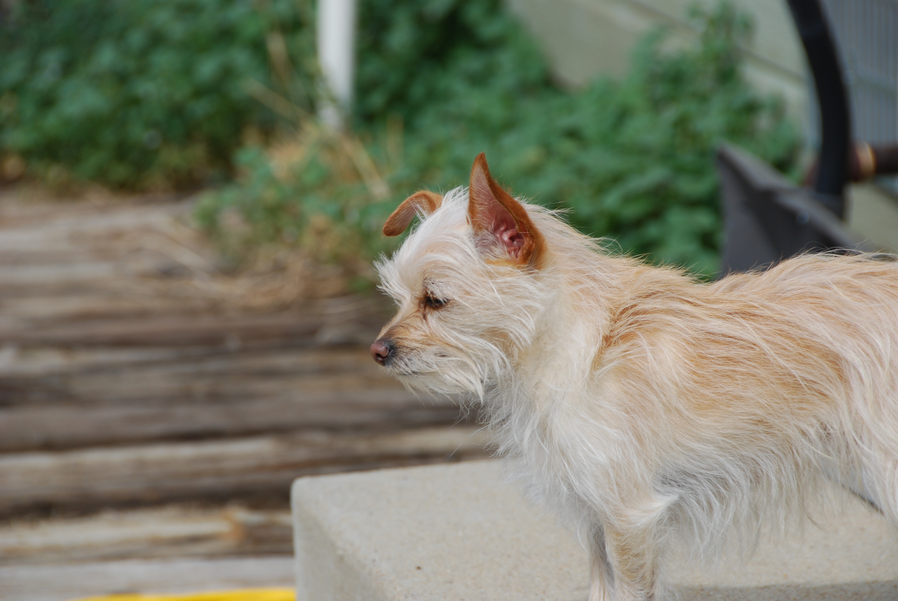

Webpage By: Keith Harrison
Welcome to Keith Harrison's Blog
Hello and welcome to my blog page! Please make yourself at home!
Title: Week 3 - Blog Post
Description: This is my week 3 - Blog Post
Greetings fellow students, cyber-scholars, and seekers of knowledge! My name is Keith Harrison, and it is my pleasure to meet you all as we embark on this epic journey together. By day, and at times by night, I ply my trade as a cyber-security engineer. I spent most of my childhood in Virginia, where I spent countless days roaming the battlefields of Yorktown, exploring the settlement of Jamestown, and wandering the cobblestone streets of Colonial Williamsburg. After high school, I joined the US Naval Special Forces, where I traveled to 17 different countries, Bulgaria and Romania (talk about local myths and legends!) being two of my favorites. Currently, I spend my free time with my wife and our four, slightly neurotic and yet incredibly lovable, rescue dogs (meaning, dogs from a rescue … they are entirely too minuscule to rescue anyone) and a surly cat that recently adopted us, on our farm in Colorado. Other areas of interest include watching the Big Bang Theory, reading fantasy and science fiction entirely too much, playing video games, and watching movies.
Here is a picture of my dog: Kato!
Here is a picture of a hawk that lives next to our house.
Title: Week 4 - Web Forms & UI
Description: This is a post from the Week 4 - Web Forms & UI Assignment!
Here is the Python script used to create my blog post!
Title: Week 6 - Collage
Description: The link to my Week 6 - Collage is below. Enjoy!
Here is my Collage Assignment!